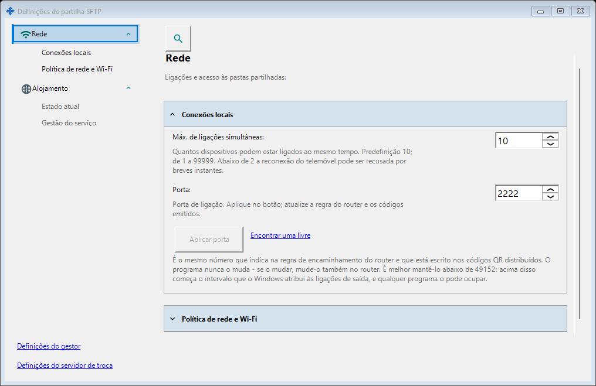
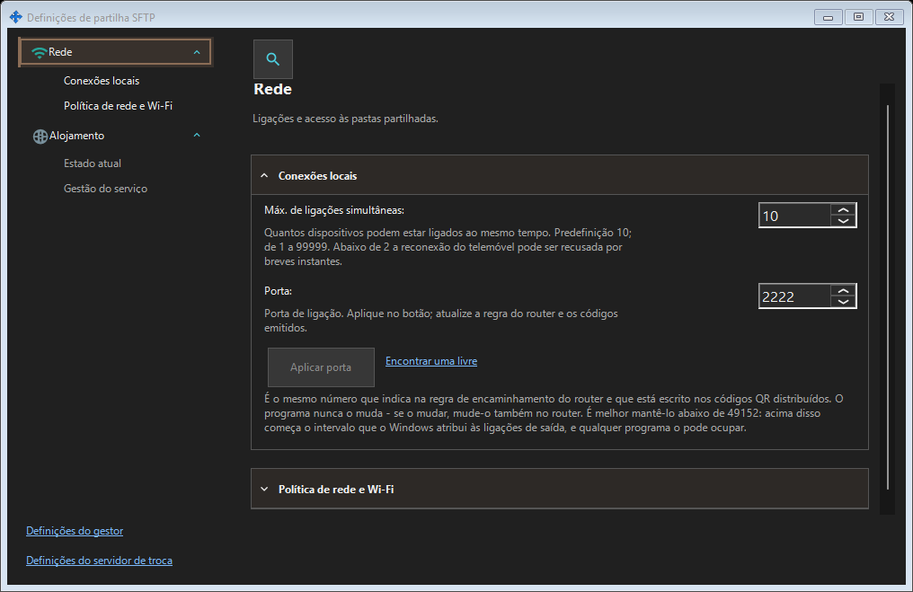

Configurações de compartilhamento SFTP
Finalidade
SFTP: porta, limite de conexões, rede local e serviço Windows. Servidor de troca: endereço, TLS, contas, dispositivos, convites, serviço, registros e administração remota.


Nesta ordem
A porta SFTP muda com Aplicar. Mudar de janela mantém o rascunho. Ao fechar: Sim aplica, Não descarta, Cancelar continua. Os erros mantêm o rascunho. Atualize códigos e regra do roteador após mudar a porta.
Os elementos
Configurações de compartilhamento SFTP
SFTP: porta, limite de conexões, rede local e serviço Windows. Servidor de troca: endereço, TLS, contas, dispositivos, convites, serviço, registros e administração remota. A porta SFTP muda com Aplicar. Mudar de janela mantém o rascunho. Ao fechar: Sim aplica, Não descarta, Cancelar continua. Os erros mantêm o rascunho. Atualize códigos e regra do roteador após mudar a porta.
Configurações de compartilhamento SFTP
SFTP: porta, limite de conexões, rede local e serviço Windows. Servidor de troca: endereço, TLS, contas, dispositivos, convites, serviço, registros e administração remota. A porta SFTP muda com Aplicar. Mudar de janela mantém o rascunho. Ao fechar: Sim aplica, Não descarta, Cancelar continua. Os erros mantêm o rascunho. Atualize códigos e regra do roteador após mudar a porta.